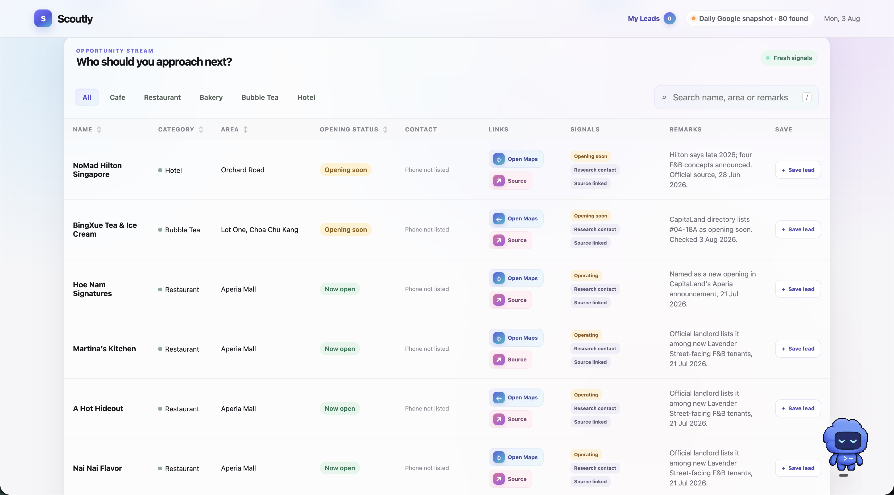
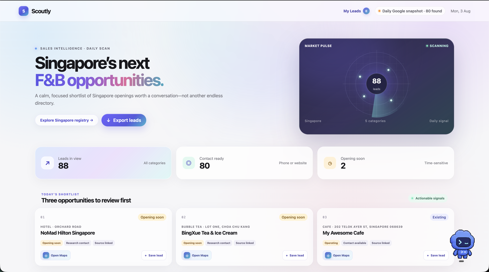

PROJECT / 01Singapore F&B
Singapore F&B
Sales Intelligence
PROBLEMSales staff spent too much time searching across different sources for potential F&B clients.
SOLUTIONA filterable dashboard that brings new and upcoming businesses into one place.
OUTCOMEProspects are easier to review, giving the team a clearer starting point for outreach.
- ROLE
- Team research, problem framing, information architecture, MVP scope
- FINAL OUTPUT
- A centralised lead-review dashboard that reduces scattered research.